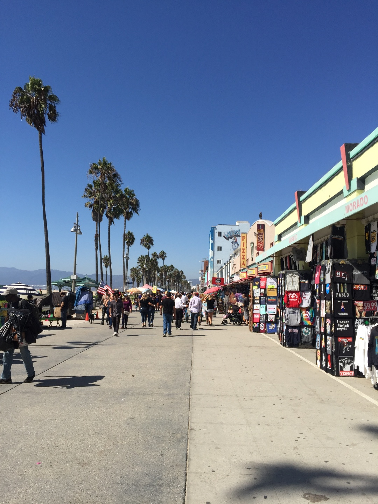
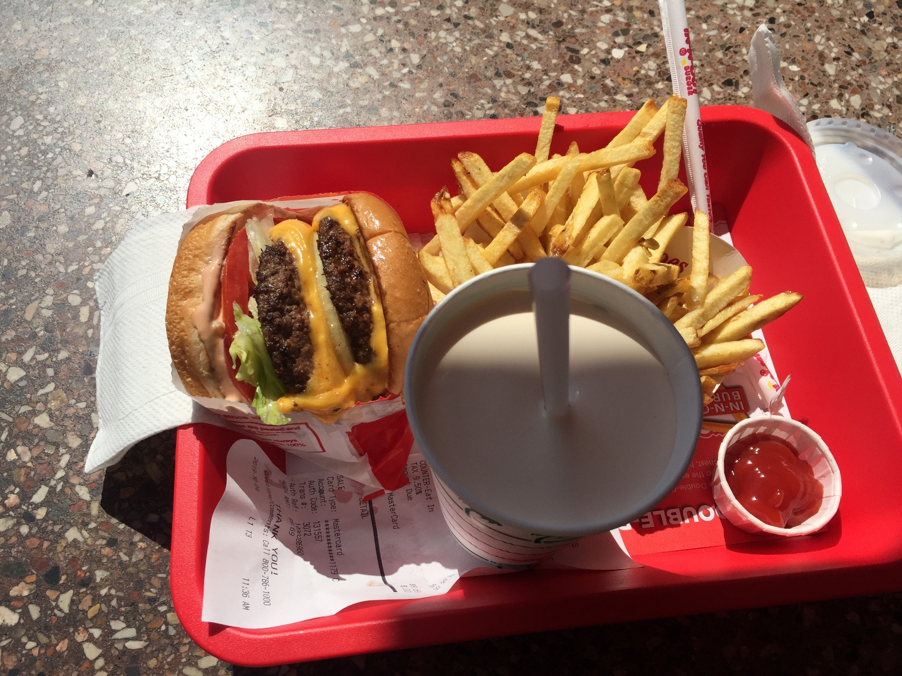

Wooseok's Travel Diary - USA (Western)
Wooseok's Travel Diary - USA (Western)
United States of America
- 2019. 10. 3 ~ 10, 16 ~ 27 - 로스앤젤레스
- 로스앤젤레스(영어: Los Angeles, 스페인어: Los Ángeles 로스앙헬레스[*] [los ˈaŋxeles],
음차: 나성(羅城))는 미국 캘리포니아주 남부에 위치한 도시로, 면적은 1290.6 km²이다. 2010년 미국 인구조사를
기준으로 3,792,621 명의 인구가 거주하고 있어 캘리포니아주에서 가장 인구가 많은 도시이자,
미국 전체에서는 뉴욕에 이어 두 번째로 인구가 가장 많다. 로스앤젤레스는 약 1,800만 명으로 추정되는
로스앤젤레스 대도시권의 중심지로, 이 대도시권은 미국에서 두 번째로 크며, 세계에서 가장 큰 대도시권 중 한 곳이다.
또한 세계에서 가장 다양한 인종이 모여드는 군 중 한 곳인 로스앤젤레스 군의 군청소재지이다.
로스앤젤레스에서 사는 사람들을 앤젤레노스(Angelenos)라고 부르기도한다.
|
 |
|
 |
- 2019. 10. 10 ~ 16 - 라스베이거스
- 라스베이거스(영어: Las Vegas, 문화어: 라쓰베이거쓰) 또는 라스베가스는 미국 남서부 사우스웨스트
네바다주 남부 사막 가운데에 있는 도시이자 최대도시이다. 클라크군에 위치해 있다. 세계적으로 잘 알려진 카지노가
많은 관광과 도박의 도시이며, 결혼과 이혼 수속이 간단한 곳으로도 잘 알려져 있다. 전력은 후버 댐에서 공급받으며
상수도 물은 콜로라도강에서 얻고 있다. 라스베이거스는 1905년 5월 15일 사막 위에 세워졌다.
그리고 6년 뒤에 도시로 정식 등록되었다. 미국에서 애틀랜틱 시티와 함께 도박이 허용된 대표적인 도시이다.
네바다 주는 타주와는 다르게 주 내 모든 곳에서 도박이 허용된다. 라스베이거스는 엔터테인먼트의 세계적인
메카로 발전되었으며 2016년도 일년간 찾아온 관광객은 4천2백만명에 달했다.
|  |
|
|
 |
- 2019. 10. 27 ~ 31 - 샌프란시스코
- 샌프란시스코(San Francisco, 음차: 구금산 (舊金山))는 미국 캘리포니아주에 위치한 도시로,
북부 캘리포니아의 문화, 경제, 상업 거점 역할을 하고 있다. 공식적인 명칭은 샌프란시스코 시군
(영어: City and County of San Francisco 시티 앤 카운티 오브 샌프란시스코[*],
스페인어: Condado de San Francisco 콘다도 데 산프란시스코[*])이다. 성 프란치스코에서 이름을 따왔다.
샌프란시스코의 면적은 46.9 제곱마일 (121 km2)이다. 샌프란시스코 반도의 북부 끝에 자리잡고 있으며,
미국의 주에서 가장 작은 군이다. 인구 밀도는 km2 당 7,022명으로, 캘리포니아 주에서 인구 밀도가
가장 높은 대도시(20만 명 이상 도시)이며, 미국 전체에서는 뉴욕에 이어 두 번째로 높다.
샌프란시스코의 인구는 2014년 기준으로 852,469명으로 로스앤젤레스, 샌디에고, 산호세에 이어 캘리포니아 주에서
네 번째로 인구가 많은 도시이다.
Top of page ↑